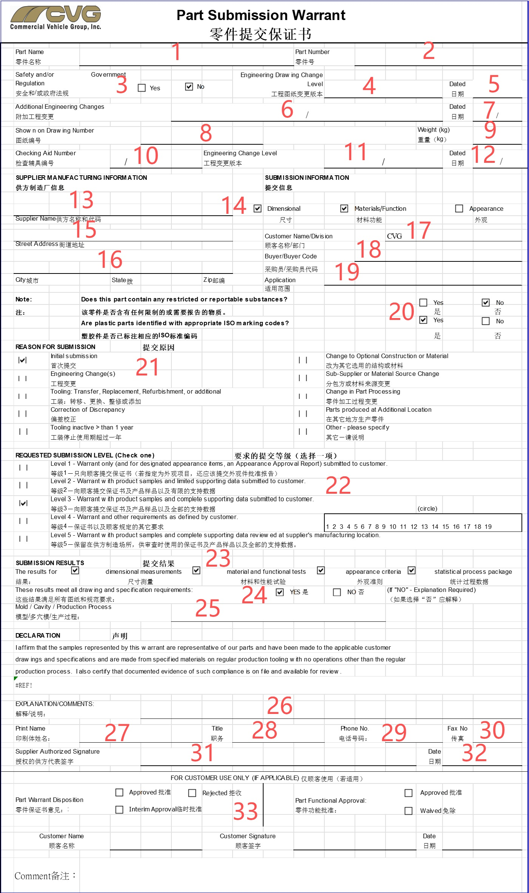
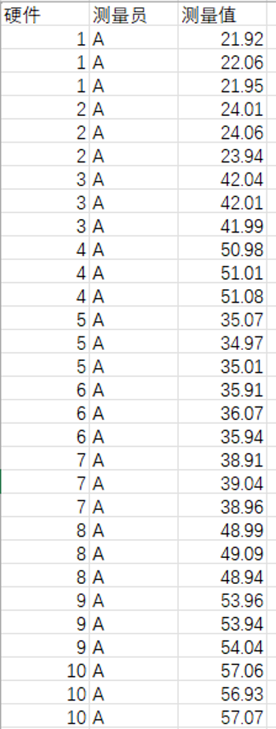
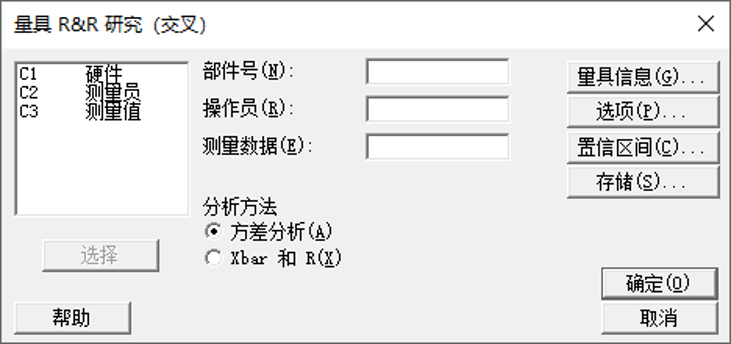
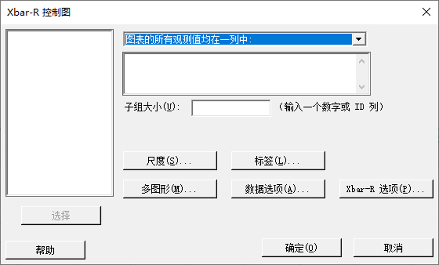
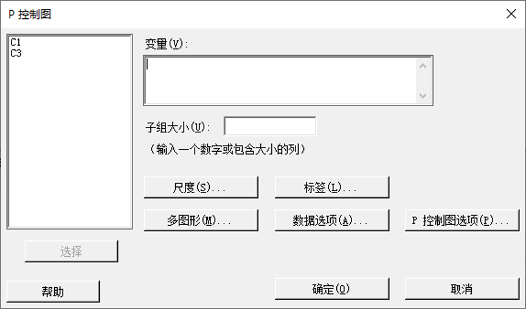
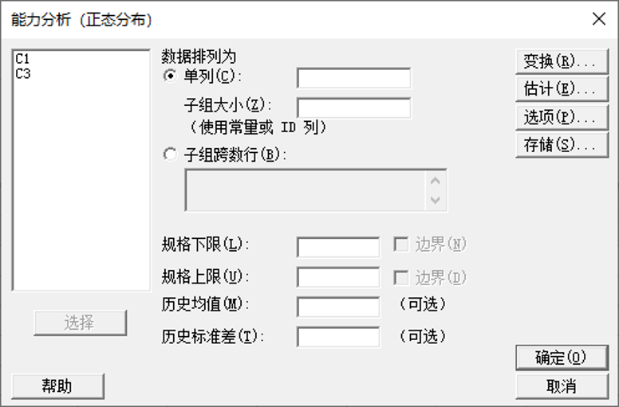
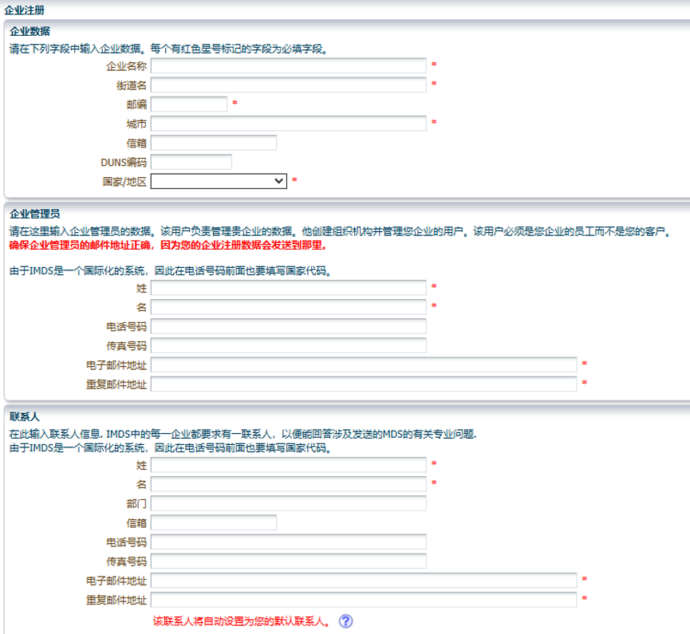

📋 PPAP 填写规范
● 前言
以下 PPAP 的填写规范是以 CVG 提供的查核清单来展开的。若客户未提供查核清单，一般根据 AIAG（汽车工业行动集团）的《PPAP手册》第四版，提供标准要求的 18个核心报告。具体如下：
- 设计记录 — 包括产品的图纸、数模（CAD）、技术规范等。
- 授权工程变更文件 — 针对产品/过程有变更时，所有已获批准的工程变更通知。
- 顾客工程批准（如要求）— 当客户有要求时，需提交样品批准或临时偏离许可的证明。
- 设计失效模式与后果分析（DFMEA） — 仅当供应商有产品设计责任时，必须提供。
- 过程流程图 — 展示从原料进厂到成品出货的全部生产过程的流程。
- 过程失效模式与后果分析（PFMEA） — 分析制造、装配过程中潜在的风险及改善措施。
- 控制计划 — 对应流程图和 PFMEA，详细列出各工序的控制方法、频次、反应计划。
- 测量系统分析（MSA） — 通常包含量具的重复性、再现性（Gage R&R）、偏倚、线性等研究报告。
- 全尺寸测量结果 — 按图纸标注的所有尺寸，对规定的样品数量进行测量，并记录实测值。
- 材料/性能试验结果 — 包含化学成分、物理性能、功能/耐久性测试等，需要有实验数据并满足规范。
- 初始过程能力研究 — 通常对关键特性进行短期的过程能力分析，如计算 Pp / Ppk 指数。
- 合格实验室文件 — 如果试验由外部或内部实验室完成，需提供该实验室经认可（如 ISO/IEC 17025）的范围证明。
- 外观批准报告（AAR，如适用） — 如果客户要求对颜色、纹理、光泽等外观项目进行批准，则必须提交。
- 生产件样品 — 按客户要求数量，从量产工装和工艺条件下生产出的实际样品。
- 标准样品 — 由供需双方共同封样签字的样板，作为后续判定外观/界限的标准。
- 检查辅具 — 指为该项目专门制作或更新的检具、量具、夹具、样板等辅助检查工具清单及验证记录。
- 顾客的特殊要求 — 各主机厂（如 Ford, GM, Stellantis 等）在手册之外规定的独特要求文件。
- 零件提交保证书（PSW） — 这是所有等级 都必须提交 的核心文件。完成前 17 项后，填写的正式"通关文牒"，经负责人签字承诺产品完全符合客户要求。
一 PSW

PSW 零件提交保证书 填写表格示意图
- 零件名称：填写零件的名称。示例：SBR 传感器
- 零件号：填写客户提供的零件号。示例：320939
- 一般勾选：Yes
- 图纸版本：PPAP 提交当天的图纸版本。示例：A0
- 提交日期：PPAP 提交当天的日期。示例：2026.05.04
- 工程更改：列出所有已在该零件上体现的并已批准的工程更改，主要写变更编号，一般不填写。示例："/"
- 提交日期（重复）：PPAP 提交当天的日期
- 图纸编号：填写图纸的编号。示例：S0194-A
- 产品重量：产品实际称量出来的重量（单位：kg）。示例：0.02
- 测量设备编号：对应"检具清单及校验报告"上的间距编号。示例：LJ-003
- 检具版本：如若该检具发生过设变，则需填写版本编号，一般不填写。示例：N/A
- 提交日期（第三次）：PPAP 提交当天的日期
- 供应商全称及代码：填写本司全称及客户提供的供应商代码。示例：广东方舟智造科技有限公司 / 65066
- 提交等级：一般提交等级三，需要全部勾选上
- 详细地址：填写本司详细地址。示例：广东省肇庆市怀集县广佛肇工业区 A 区三胜五金有限公司工业园 4 栋
- 城市·省份·邮编：示例：肇庆 广东 526400
- 客户公司名称：示例：CVG
- 客户采购员：示例：王小二
- 适用车型：一般填写"通用"
- 物质合规：查看零件是否含有需要报告的物质，如不符合 ROHS 的物质，以及塑胶件是否有相应的 ISO 编码，一般填 Yes
- 提交原因：一般为首次提交，勾选"首次提交"
- 提交等级：等级 3
- 提交结果：等级 3，一般全部勾选
- 符合性确认：确认提交结果是否满足图纸和规范要求，一般勾选 YES
- 多穴模/生产线编号：如采用多穴模、成型模、工具、冲模或样板模型，或采用生产线/工作站单元生产，则必须填写特定编号
- 样品声明：无需解释或说明，一般填写 "/"
- 代表印刷姓名：本司代表印刷姓名（示例：见原图 media/image2.jpeg）
- 职务：示例：工程
- 电话：填写本司代表电话号码
- 传真：一般不填。示例："/"
- 代表印刷姓名（重复）：本司代表印刷姓名（示例：见原图 media/image2.jpeg）
- 提交日期（第四次）：PPAP 提交当天的日期
- 客户填写区域：由客户填写，即使不需要填也不能留空，填写 "/" 上去
二 销售产品的设计记录
a. 气泡图
使用圆圈数字在原图纸上标注样品尺寸及性能要求，所标注的尺寸和性能要求必须要在全尺寸报告上一一对应。如图纸上尺寸的气泡号为 ①，则全尺寸报告上该序号也必须为 ①。性能要求虽无尺寸数据，但也需填写上去，在"供应商测试"里面有对应的报告并于全尺寸报告上填写该性能测试报告的所在文件位置，如"详情见 14. 供应商报告里 14.4 触发复位压力测试"。
b. 技术要求评审表
根据图纸及规范要求填写对应的评审要求。
c. 设计记录
提供 PDF 格式的最新工程图纸。
三 批准的工程变更文件
如果样品图纸为本司设计，变更图纸后需要提供客户批准承认后套框回签的图纸。如图纸为首次提交，则需提交客户批准承认后套框回签的初始版本图纸。若非设计方，则不需要提供。
四 特殊要求清单
根据客户需求以及图纸要求总结出特殊要求清单，如性能要求、阻燃性、禁用物质等，并标注该要求的来源。
填写规范：
- 零件名称：填写零件的名称。示例：SBR 传感器
- 零件号：填写客户提供的零件号。示例：320939
- 供应商名称：填写本司的全称
- 图纸版本：填写产品的图纸版本。示例：A0
- 适用车型：填写零件适用的车型，一般填写"通用"
- 特殊要求摘要：填写客户在图纸或聊天信息等提及的特殊要求。示例：阻燃性满足 GB 8410
- 评审："可"——同意；"否"——不同意；"仪"——需讨论/再议
- 控制方法：填写应对特殊要求采取的措施。示例：进行耐弯折测试
- 控制文件：填写与控制方法对应的文件。示例：耐弯折测试
- 执行部门：明确唯一责任部门，若多部门协作，写明主导部门即可
- 验证：确认控制方法是否可以验证通过。勾选"否"则需要在备注填写原因和下一步动作
- 验证日期：填写实际完成并验证通过的日期。示例：2026.07.31
- 备注：填写需要补充的内容
- 签字区域：填写对应人员的印刷字体名字及签字日期
五 客户工程部批准
a. 工程部批准材料
供应商如需更换工艺等，则需向客户工程提交申请批准后才可迭代产品。除此之外，还需提交《变更评审检查清单》，内部进行变更可行性评估。
顾客工程批准表格填写规范：
- 供应商：填写本司全称
- 供应商代码：填写客户提供的供应商代码
- 地址：填写本司的详细地址
- 影响控制项目：该变更是否会影响到客户指定的特殊特性（如 CC、SC）、过程控制计划或 PFMEA 中的潜在失效模式。若勾选"是"，则需重新提交控制计划和 PFMEA，甚至有可能重新提交 PPAP；若勾选"否"，则不需要。
- 更改的说明：根据实际情况勾选更改了的方面
- 更改的效果：必须简述变更对产品的物理性能、耐久性、外观或装配的影响。示例：预期提高抗拉强度，或减轻总重 0.2kg
- 互换性：如果勾选了"否"，意味着新旧零件 100% 可以互换；如果勾选了"是"，客户可能会要求提供新旧件对比试验。如果影响互换性，必须附上新旧件实物对比或试验数据报告
- 批准后更改所需时间：预估变更批准后，多久能重新提交新样品
- 工装和设备的更改：如果勾选了"是"，必须在下方"如果是，费用多少"填写具体的预估金额，不能留空
- 费用：若更改了工装和设备，则需填写具体费用；没更改则不需填写
- 影响发货计划：如果影响（断供风险），必须附加说明并提前与客户 SQA 协商
- 供方代表签字：填写本司代表的印刷体签名。必要时必须由公司具有法人授权或经营授权的管理人员签字，不能只是工程师代签
- 影响单件的费用：如影响单件的费用，则需让业务与客户 SQA 协商，并列出变更的材料或工装设备等
- 单件费用金额：若影响单件的费用，则需填写具体费用；不影响则不需填写
- 后续部分：由客户填写
b. 工程部测试报告
提供材料测试报告、性能测试报告以及全尺寸报告。如若在供应商测试报告中有提供，则不需重复提供。
六 设计 FMEA（DFMEA）
如果图纸为本司设计的，则需要提供设计 FMEA 给客户。
• 必须由多方论证小组（设计、制造、质量、试验等）共同完成，不可一人包办。
• 所有特殊特性（SC/CC）必须在 DFMEA 中明确标识。
• 最终版本的 DFMEA 应与设计图纸、DVP&R（设计验证计划与报告）相互一致。
• 填写前先确认：分析对象是子系统、组件还是零件？边界条件是什么？
• 如果严重度 ≥ 9，要在 PFMEA 中有体现，有相应的措施。
填写要求：
- 过程功能要求：分析并填写样品需要达到的功能要求。示例：高低温环境性能稳定
- 失效模式：功能丧失或不合格的具体表现形式。示例：高温或低温后感应参数漂移
- 潜在失效后果：失效模式对客户、法规、下游工序造成的影响。示例：极端天气下传感器工作不稳定，时灵时不灵
- 特性等级：根据客户要求，如 "SC"、"CC"、"●/▲" 等
- 严重度（S）：根据失效后果的严重程度，按 1-10 评分，10 = 最严重
- 潜在失效起因/机理：导致失效模式发生的设计薄弱环节或错误。示例：材料热膨胀系数不匹配
- 频度（O）：评分 1-10，10 = 极高概率，几乎肯定发生
- 现行设计预防控制：在设计定型前，用于防止失效原因发生或降低其发生概率的措施。示例：选用低温度系数材料（PET/PI）碳膜配方经高低温验证
- 现行设计探测控制：用于在设计交付前，发现失效模式或原因是否存在的方法。示例：高低温循环测试（-40℃↔85℃，100 次）循环后测试电阻变化率
- 探测度（D）：评分 1-10，10 = 完全无法探测，1 = 肯定能探测
- 风险顺序数 RPN：RPN = S × O × D。示例：S=4，O=3，D=3，RPN = 36。制定阀值（如 RPN > 100 或 S ≥ 9 无论 RPN 值），超出必须建议措施
- 建议的措施：针对高 RPN/AP 或 S ≥ 9 的项目制定。措施指向：降低严重度、降低频度、提升探测度。必须是具体行动
- 责任部门及责任人：填写对应的责任部门和责任人
- 措施的结果：填写从建议的措施中采取的措施。实施后重新评估 S、O、D，记录新的 RPN。若新值未降至可接受水平，需继续定义进一步措施，直至风险受控
严重度（S）评分参考：
| 评分 | 严重度等级 | 后果描述 |
|---|---|---|
| 10 | 极高 | 影响安全或法规，无警告 |
| 9 | 极高 | 影响安全或法规，有警告 |
| 8 | 高 | 产品无法运行，主要功能丧失 |
| 7 | 高 | 产品可运行但性能下降 |
| 6 | 中 | 部分功能丧失，客户不满意 |
| 5 | 中 | 功能退化，客户发现 |
| 4 | 低 | 轻微影响，大多数客户能察觉 |
| 3 | 低 | 轻微影响，部分客户能察觉 |
| 2 | 极低 | 几乎无影响 |
| 1 | 无 | 无影响 |
频度（O）评分参考：
| 评分 | 失效发生概率 | 描述 |
|---|---|---|
| 10 | ≥ 1/2 | 极高，几乎肯定发生 |
| 9 | 1/3 | 很高，频繁发生 |
| 8 | 1/8 | 高，经常发生 |
| 7 | 1/20 | 中等偏高 |
| 6 | 1/80 | 中等 |
| 5 | 1/400 | 中等偏低 |
| 4 | 1/2000 | 低 |
| 3 | 1/15000 | 很低 |
| 2 | 1/150000 | 极低 |
| 1 | ≤ 1/1500000 | 几乎不可能 |
探测度（D）评分参考：
| 评分 | 探测机会 | 描述 |
|---|---|---|
| 10 | 极低 | 无法探测或没有检测 |
| 9 | 极低 | 很难探测，需破坏性试验 |
| 8 | 低 | 通过后期试验间接探测 |
| 7 | 低 | 通过后期试验直接探测 |
| 6 | 中等 | 通过过程控制探测 |
| 5 | 中等 | 通过在线检测探测 |
| 4 | 高 | 通过自动化检测探测 |
| 3 | 高 | 通过防错装置探测 |
| 2 | 极高 | 设计成熟，几乎不失效 |
| 1 | 极高 | 肯定能探测 |
• 失效原因写成了制造过程错误（DFMEA 应只关注设计不足）。
• 探测控制写"100% 全检"（设计阶段通常没有量产全检，应写设计验证试验）。
• 严重度评分随意（团队必须统一对安全/法规/主要功能的定义）。
• 缺少特殊特性标识（一旦图纸标了关键特性，DFMEA 中对应失效的该列必须有相应符号）。
• 与 DV/PV 计划脱节（DFMEA 中的探测控制，应直接映射到 DVP&R 中的具体试验项目）。
• 措施不追踪关闭（建议措施栏不能长期悬空，PPAP 前必须全部完成并更新评分）。
七 过程流程图
过程流程里所有的工序，都必须在 PFMEA 中作为独立的"过程步骤"进行失效分析。每个工序都有对应规定的符号，不能搞混。"关键产品特性"和"关键过程性能"要与控制计划里的产品特性和过程特性一一对应。
核心符号标志：
| 环节类型 | 标准符号 | 说明 |
|---|---|---|
| 加工 / 操作 | ○（圆形） | 增值的生产、装配、加工步骤，部分企业改用矩形方便填写工序描述 |
| 检验 | ◇（菱形） | 尺寸、外观、性能等质量检查环节 |
| 搬运 / 运输 | →（箭头） | 物料在工序、车间之间的位置移动 |
| 储存 | ▽（倒三角） | 正式库存、仓储管控环节 |
| 延迟 / 等待 | D（大写） | 非计划的临时停滞、待加工 |
八 过程 FMEA（PFMEA）
- PFMEA 来自于 DFMEA 及过程流程图，DFMEA 中严重度 ≥ 9 的及过程流程图涉及到的工序都需要在 PFMEA 上有所体现。
- PFMEA 分析的步骤编号与名称必须与过程流程图一致。
- 填写格式与 DFMEA 类似，但思路要从对设计的潜在失效模式分析转换成对生产过程的潜在失效模式分析。但有两点不同：
1. 潜在失效起因/机理：
导致失效模式发生的根本原因，来自过程设计或控制缺陷。从 5M1E 角度找原因：
- 人（Man）：操作不当、误判（需深究为何会不当，缺少防错？）
- 机（Machine）：设备精度不足、刀具磨损、感应器失效
- 料（Material）：来料批次差异、半成品变形
- 法（Method）：参数设定错误、缺少标准作业、工艺路径不合理
- 测（Measurement）：量具未校准、测量方法错误
- 环（Environment）：温湿度、振动、清洁度
2. 现行过程控制：
当前已实施的、用于防止失效原因发生的措施。常见类型：
- 防错装置（如销孔定向、传感器在位检测）
- 工装定期预防性维护、刀模寿命管理系统
- 作业指导书中的标准参数设定、首件确认流程
- 来料标签防错、二维码校验
- 培训与资格认证（仅可作为辅助，不能作为主要预防）
九 控制计划
- PFMEA 分析的步骤编号与名称必须与过程流程图一致。
- 零件过程编号：直接填写过程流程图的步骤编号
- 过程名称操作描述：直接填写过程流程图的名称
- 生产设备：用于执行本步骤的生产设备
- 特性："产品特性"和"过程特性"要与过程流程图的一致
- 特殊特性分类：根据客户图纸或 PFMEA 分析结果，对相关特性标注符号。常见符号：CC、SC、●、▲ 等。必须与图纸和 PFMEA 使用的符号完全一致
- 产品/过程、规范/公差：特性的接收标准，即判定产品合格与否的界限
- 测量工具：使用什么工具或方法来测量该特性。示例：目视
- 样品容量：需要检验的样品数量
- 抽检频率：多久检一次
- 管理方法：如何控制该特性，确保其稳定受控。这是 PFMEA 中"预防/探测控制"的操作化落地
- 反应计划：当控制方法发现不合格或过程异常时，立即采取的行动
十 检具清单及校验报告
检具清单及校验报告应该体现所有工序中包含到的所有量检具及校验结果。
- 量检具编号：填写量检具的编号。示例：LJ-001
- 量检具名称：填写量检具的名称。示例：二次元影像仪
- 检测项目：填写需要检测的项目名称。示例：开关导通电阻
- 里程：填写量检具截至目前所使用的次数，整数即可。示例：6000
- 精度/分辨率：填写量检具能检测到的最小单位。示例：0.001mm
- 检定单位：填写检定量检具的单位或机构。示例：计量检定机构
- 使用/存放地点：填写量检具使用或存放的地点。示例：品质部
- 数量：填写同一类型的量检具的数量。示例：3
- 预期总寿命：填写评估量检具的使用寿命。示例：10 年
- 已使用年限：填写量检具已使用的年限。示例：3 年
- 检定周期：填写量检具检定的频率。示例：1 年
- 专用/通用：该量检具是否为只应用于该项目，是则填写"专用"，否则填写"通用"
- 校验时间：填写量检具的校验时间。示例：2026.05.14
- 校验结果：填写量检具的校验结果。示例：OK
- 备注：可填写量检具的用途。示例：水胶工序专用
十一 测量系统研究
主表格填写规范：
- 零件/工序号：填写零件或工序的名称。示例：水胶工序
- 测量内容：填写测量零件的内容。示例：开关导通电阻
- 测量要求：填写测量内容的规范要求。示例：≤150Ω
- 量具名称：填写测量量具所使用的设备名称。示例：二次元影像仪
- 测量范围：填写量具的量程大小。示例：0~200Ω
- 分辨率：填写量具的精度大小。示例：0.001mm
- 测量器具编号：填写量具的编号。示例：EQ-001
- 分析项目：填写分析测量出来的数据的项目类别。示例：GR&R 分析
- 完成时间：填写完成分析数据的时间。示例：2026.6.1
- 分析人：填写分析人员姓名。示例：王小二
- 分析结果："OK" 或 "NG"
- 报告附件：一般不填
重复性再现性研究（交叉型）表格填写规范：
- 零件名称：填写产品的零件名称
- 零件号：填写产品的零件号
- 特性名称：填写测量的项目
- 分析日期：填写分析数据的日期
- 特性值：填写测量项目的标准值
- 上限：填写标准值 + 上公差的值
- 下限：填写标准值 - 下公差的值
- 分析：填写分析数据的人员姓名
- 量具名称：填写测量产品的量具名称
- 量具编号：填写测量产品的量具编号
- 量具精度：填写量具的精密程度
- 批准：填写批准数据分析报告的人员姓名
- 零件：每个操作员测量对同一件产品进行 3 次，共需测量 10 pcs 的产品
- 平均值：对同一件产品测量 3 次的平均值（公式计算）
- 极差：3 次测量出来的最大值减去最小值（公式计算）
- 结果平均值：对应行 10 pcs 产品测量值的平均值（公式计算）
- 零件（Xp）：零件测量值的期望值，3 名操作员对同一件产品测量的平均值的和除以 3
- 图表报告：使用 Minitab 分析 3 名操作员测量产品出来的数据所得。量具 R&R 报告里的 "% 研究变异（%SV）" 列对应的 "合计量具 R&R" 行的值即为 "%R&R" 的值；"可区分的类别数" 即为 "NDC"。%G&G < 10%，NDC > 5 是测量系统可接受的
- 分析者判定及分析结论：根据分析出来的图表报告以及评判标准，填写分析判定和结论
Minitab 进行 GR&R（交叉）分析操作步骤：

Minitab 数据格式示例（操作员A测量数据）
- 选择 10 件同一型号的零件，分别让 3 名操作员测量同一件零件 3 次并保留数据（零件型号、测量员、测量数据）。
- 打开 Minitab，将带有表头的名称（零件型号、测量员、测量数据）复制填入到 Minitab 的表格中（使用鼠标点击第一行的单元格，即灰色区域的那一行，鼠标右键粘贴单元格）。
- 点击「统计」→「质量工具」→「量具研究」→「量具 R&R 研究（交叉）」→ 选择「部件号」「操作员」「测量数据」→ 确认分析方法为「方差分析」→ 点击「选项」→ 输入规格下限和上限 → 点击「量具信息」→ 填写信息（量具公差 = 规格上限 - 规格下限）→ 点击「确定」。

Minitab 量具 R&R 研究（交叉）设置界面
十二 全尺寸报告
- 全尺寸报告里的气泡序号必须对应图纸上的气泡序号，即圆圈数字标注的关键尺寸和性能要求等，性能要求需填写该测试报告存放的对应文件夹及报告名称。
填写规范：
- 气泡序号：与图纸上的气泡号一致，包括尺寸、性能要求等
- 项目：填写需要测量的项目名称
- 尺寸/特性：填写图纸要求的尺寸或特性，性能要求需填写该测试报告存放的对应文件夹及报告名称
- 测量结果：填写使用测量仪器测量出来的尺寸结果
十三 初始过程能力研究
- 初始过程能力研究目的是了解过程变差、分析并预测过程在规范内运行的能力，而非单纯追求一个指数值。
- 应测量 100 pcs 的样品数据，并将其分为 5 pcs 为一小组来进行分析比较。一般使用 Minitab 来分析初始过程能力是否达标。
填写规范：
- 特性描述：填写需要研究的项目名称
- 特殊分类：填写特性符号，"SC" 或 "CC"
- 量具名称：填写参与研究的量具名称
- 测量范围：填写量具的量程
- 精度：填写量具的精密程度
- 控制方法：使用最多的是 P 图和 Xbar-R 图。检验一般使用 P 图，其余一般使用 Xbar-R 图
- 完成时间：填写过程能力分析完成的时间
- 报告编号：填写报告的编号。示例：SY-CP-001
- 报告附件：初始过程能力研究的报告
1. Xbar-R 图制作步骤：

Xbar-R 控制图示例（Minitab 输出）
将测试数据输入 Minitab 表格，点击「统计」→「控制图」→「子组的变量控制图」→「Xbar-R」→ 选择数据列 → 填写「子组大小」（一般为 5）→ 点击「确定」。图里未出现标红文字则表示 Xbar-R 图合格。
2. P 图制作步骤：

P 控制图示例（Minitab 输出）
将测试数据输入 Minitab 表格，点击「统计」→「控制图」→「属性控制图」→「P」→ 选择数据列 → 填写「子组大小」（一般为 5）→ 点击「P 控制图选项」→「检验」→ 勾选「连续 K 点在中心线同侧」→ 点击「确定」。图里未出现标红文字则表示 P 图合格。
3. 过程能力报告制作步骤（CPK）：

过程能力分析（正态）对话框示例（Minitab）
将测试数据输入 Minitab 表格，点击「统计」→「质量工具」→「能力分析」→「正态」→ 选择数据列 → 填写「子组大小」（一般为 5）→ 填写「规格下限」及「规格上限」→ 点击「确定」。若 CPK ≥ 1.33，视为合格。
4. 表格填写补充：
- 零件名称、产品图号、特性分类及特性描述 要与主表格一致。
- 样本数量：填写参与研究所需的样品数量。
- 子组数量：子组数量 = 样本数量 ÷ 子组大小。示例：样本数量 100，子组大小 5，则子组数量为 20。
- DATA 工作表下可以使用
WRAPROWS函数将一列样本数据平均分成 N 列。示例：将 100 个数据分成 5 列，WRAPROWS(A1:A100,5)即为所需的函数。数据被分为 5 列 20 行。
十四 实验室资格证书
- 实验室资格证书为通过 CNAS/CMA 认可的 ISO/IEC 17025 认可证书（复印件）和认可范围附件。
- 目前本司没有实验室资格证书，可以先不提交。
- 若客户执意要，可以提交一份 《内部实验室符合性声明》。根据 PPAP 标准，内部实验室虽然没有第三方证书，但应满足特定要求（如设备按期校准、人员经过培训、有标准作业指导书等）。
1. 准备一份文件，内容包括：实验室设备清单及其有效的校准证书、测试人员的培训记录、所依据的测试标准（如 GB、ISO）清单。
2. 在文件最后，附上一份由质量经理或负责人签字的声明，格式参考：
"本司内部实验室虽未经第三方 ISO/IEC 17025 认可，但其设备、人员、方法及环境完全满足针对 [产品名称] 项目所执行的 [列出测试项目] 的要求，并能提供准确可靠的检测结果。"
3. 在 PPAP 清单中，项目名称写"实验室资格文件"，提交状态写"提交"，实际就塞入这份声明及佐证材料。
4. 给客户的印象是：虽然没证，但所有检测要素受控，且你敢于正面声明和负责。
十五 供应商测试报告
- 提交测试报告本身且名称编号要对"全尺寸报告"一致。即"全尺寸报告"上面填写的"详情见 13. 供应商报告里 13.4 触发复位压力测试"，则对应的测试报告的文件名称为"13.4 触发复位压力测试"。
十六 样品
- 本身不需要报告。确保样品提供给客户以及 PSW 上的零件重量填写正确。与之相关联的 PSW、设计记录、DFMEA 和 PFMEA、控制计划、全尺寸报告、供应商测试报告、测量系统研究（MSA）、初始过程研究并保留 1-3 pcs 与提交样品一致的标准限样必须要有。
十七 标准限样
- 本身不需要报告。确保留有 1-3 pcs 的标准限样，保存时间截止为 1 年或下一版本新品出现。
十八 材质证明
- 需向原材料供应商索要对应批次的材质证明，里面会有炉号、化学成分、拉伸性能、硬度等数据。
- 核对材质证明上的标准等是否与图纸要求一致。
- 如果零件使用多种材料（如不同双面胶、连接器），每一种都要有独立的材质证书。
十九 按节拍生产报告
- 零件号：填写客户提供的零件号。示例：320939
- 零件名称：填写零件名称。示例：SBR 传感器
- 供应商名称：填写本司全称。示例：广东方舟智造科技有限公司
- 图纸版本：填写图纸的版本。示例：A0
- 生产条件确认清单：根据实际情况确认生产现场实际状态，已确认则勾选"已确认"
- 工序名称：填写生产工序的名称。示例：注塑
- 理论节拍（秒）：填写理想状态下 1 pcs 零件完成该工序的工作时长。示例：50
- 实测 1（秒）：填写实际生产中 1 pcs 零件完成该工序的工作时长
- 平均实测节拍（秒）：实测 1、实测 2、实测 3 的平均值（公式计算）
- 判定：判定实测节拍是否小于理论节拍，是则 "OK"，否则 "NG"（公式计算）
- 瓶颈工位：填写平均节拍最大的工序的信息（复制该信息粘贴到此处）
- 实际瓶颈节拍：填写瓶颈工序的平均实际节拍
- 每小时理论产出：= 3600 秒 ÷ 实际瓶颈节拍（公式计算）
- 每班计划工作时间：填写每一班次计划的工作时长，一般为 8 小时
- 每班理论产出：= 每小时理论产出 × 每日计划工作时间（公式计算）
- 设备利用率（OEE）：OEE = 时间开动率 × 性能开动率 × 合格品率。
世界级水平：OEE ≥ 85%；优秀：75% - 85%；一般/可接受：60% - 75%；预警/不可接受：< 60%。
示例：时间开动率 90% × 性能效率 95% × 合格率 98% = OEE 预估为 83.8%。 - 每班有效产能：= 每班理论产出 × 设备利用率（公式计算）
- 每日班次数：填写一天内安排生产的班次
- 每月工作日：填写每月工作多少天
- 月产能：= 每班有效产能 × 每日班次数 × 每月工作日（公式计算）
- 客户需求峰值：来自客户采购预测或合同
- 年化有效产能：= 月产能 × 12（公式计算）
- 产能满足率：= 年化有效产能 / 客户年需求峰值（公式计算）
二十 包装流程
- 供应商名称：填写本司全称
- 客户名称：填写客户全称
- 交货地点：填写客户的快递地址
- 制作：填写文件制作人的姓名
- 审核：填写文件审核人的姓名。一般填写"郭定军"
- 批准：填写文件批准人的姓名。一般填写"郭文飞"
- 日期：填写内部审核通过的日期
- 零件描述：可以将图纸里零件的 2D 图填写进去
- 零件名称：填写零件的名称
- 零件号（客户）：填写客户提供的零件号
- 零件号（供应商）：填写内部使用的零件号
- 零件尺寸：查看图纸，填写零件的长、宽、高
- 单个零件重量（KG）：使用电子秤称量零件总量后填写
- 零件材质：填写组成零件的所有原料
- 交货频次：由于是首次提交，一般填写 "/"
- 包装示意图：填入零件整体、装入包装袋内、装入包装箱内的图片
- 包装描述：填写零件装入包装箱的步骤。示例：产品用 PE 膜装袋好，一个袋子可装入 50 pcs 的产品，最后将包装好的产品放进包装箱内
- 是否回收：是否是可回收的环保材料，一般填写"是"
- 总重量（包材+产品）Kg：一般填写 "/"
- 包材名称：分别在三个相同名称的表格填写零件本身、包装袋、纸箱的名称。示例："产品材料"、"PE 膜"、"纸箱"
- 包材尺寸：分别在三个相同名称的表格填写零件本身、包装袋、纸箱的尺寸
- 使用数量：分别在三个相同名称的表格填写零件本身、包装袋、纸箱所使用的数量
- 重量（Kg）：分别在三个相同名称的表格填写零件本身、包装袋、纸箱的重量
- 版本：填写文件的版本
- 新制：确认文件是否为首次制作，是就填写"是"，不是就填写为"否"
- 日期：填写文件制作完成的日期
- 变更：填写文件变更的内容
- 日期：填写文件内容变更的日期
二十一 早期遏制行动计划
- 早期遏制行动为在产品开始正式量产的初期，为了在问题"逃逸"到客户那里之前就把它们拦截下来，而临时增加的一道额外、加严的检验和围堵防线。
- 执行步骤：策划与准备早期遏制行动计划（量产前完成）→ 实施遏制（从量产首件开始，严加管控）→ 快速响应及纠错（发现问题，分析原因并纠正，验证是否恢复合格）→ 退出早期遏制（至少连续 30 个生产日发至客户端的成品零缺陷，产线也未发现同样原因反复出现的问题）→ 回归常态化控制与总结。
- 在方案执行期间，需要有以下的每日归档记录以应对客户稽查：
- 《GP-12 每日全检记录表》（含操作员与检验员双签）
- 《不良品柏拉图（每日动态更新）》
- 《遏制期内量具校准/GR&R 合格证明》
- 《QRQC 快速响应会议签到及会议纪要》
- 《GP-12 过程分层审核（LPA）评分表》
GP-12 退出确认报告填写规范：
验证周期：本批产品自 [起始日期] 至 [结束日期]，共计生产 [X] 件，产出 [X] 件合格品。
PPAP 状态：我司已于 [日期] 顺利通过客户 PPAP 批准（工装/检具已验收），且客户工程变更已落地生效。
生产过程能力：关键尺寸 Cpk 检测结果均 ≥ 1.33，过程表现稳定。新工装/检具 MSA (GR&R) 分析合格（如适用）。
遏制结果：在 GP-12 过渡期间，无客户产线停线、无投诉，内部一次合格率达到 [X]%。
结论：各项数据满足退出条件，申请正式退出 GP-12 遏制状态。
二十二 IMDS 信息提交
- 目前尚未有客户强制要求提交 IMDS 信息，也未曾提交过，因此没有现成的操作流程。以下是对它的一点见解。
- 提交流程：注册 IMDS 账户 → 在 IMDS 系统里建好数据 → 发给客户 → 客户接受 → 把 IMDS ID 填进 PPAP。
- 需要登录 www.mdsystem.com 网站并注册一个"公司账户"，然后填写带红色 "*" 的必填项。这些信息的填写需要公司人员协助完成。

IMDS 系统注册/登录界面示意图
登录系统后，按以下步骤创建 MDS：
步骤 1：新建 MDS
- 点击菜单「创建」→「材料数据表（MDS）」
- 类型选择「部件」（Component）
步骤 2：填写部件基本信息
- 零件号：严格按图纸填写，区分大小写、符号。错一个字符，客户系统会报"零件号与收货单不符"导致退回。
- 描述：图纸上的零件名称。
- 重量：单位是克，输入零件净重。
- 其他信息按提示填入供应商信息、开发日期等，可留默认或按客户要求填。
步骤 3：添加材料（最关键步骤）
把零件上的所有材料都列出来。有两种方式：
方式 A：引用供应商的 MDS（极力推荐）
- 点击「引用 MDS」
- 在弹出框里输入供应商给你的 MDS ID 和版本号，搜索。
- 系统会把该材料的完整成分数据自动加载到你零件下面。
- 依次把所有外包材料都引用进来（如塑料粒子、钢材、镀层、橡胶、胶水等）。
- 如果零件由多个半成品组成（比如注塑件 + 嵌件），要把每个半成品的 MDS 都引用进去。
方式 B：自己搭建材料（如供应商没 IMDS 数据时）
- 点击「新建材料」。
- 按材料类别选大类（如"5.1 热塑性塑料"、"1.1 钢"）。
- 再添加基础物质（Basic Substance），输入每个成分的 CAS 号、名称、重量百分比。
- 所有成分加起来必须为 100%，且通配符物质（如"7.3 不公开物质"）有使用限制。
- 非常容易报错，因为必须符合 IMDS 基础物质列表和规则。不建议新手自建，最好让供应商提供合规成分你再录入，或要求供应商尽快注册 IMDS 并创建 MDS。
步骤 4：检查数据
- 在 MDS 界面，点击「分析」或「检查」。
- 系统会自动扫描禁用物质、法规合规性、物质申报冲突等。
- 常见报错：物质超出 GADSL 限值、使用了"保密物质"但未勾选相应通配符、重量百分比加起来不是 100%。
- 必须先解决所有错误（Error），直到分析结果为"无错误"。警告（Warning）一般可提交，但建议都处理。
步骤 5：发布（Release）并发送给客户
- 检查无误后，点击「发布」（Release）。系统会生成一个 MDS ID（如 12345678）和版本（如 /1）。
- 然后点击「发送」（Send），在地址栏里填入客户的 IMDS 公司 ID。
- 勾选发送选项，一般选择"正式提交"。系统会要求你确认，然后数据就传输到客户那边去了。
二十三 分供方清单
- 提供 BOM 格式的材料清单给客户。一般需要向采购询问材料的物料编码、规格型号和分供方名称。以上都需要建了 BOM 系统后才能获取到，样品一般是不建 BOM 系统的，因此获取不到以上信息。